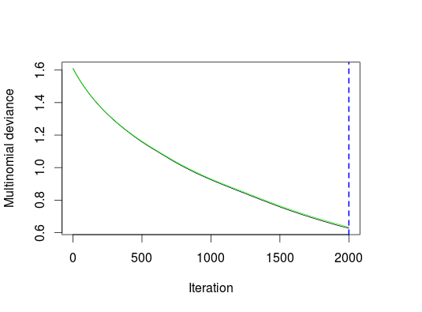

This project is maintained by lhsb
require(gbm)
# download.file("https://d396qusza40orc.cloudfront.net/predmachlearn/pml-training.csv",
# destfile="~/training.csv",method='wget')
training = read.csv("~/training.csv")
# download.file("https://d396qusza40orc.cloudfront.net/predmachlearn/pml-testing.csv",
# destfile="~/testing.csv",method='wget')
testing = read.csv("~/testing.csv")
dim(training)
dim(na.omit(training))
colSumsNA = colSums(is.na(training))
sum(colSumsNA > 0)
all(colSumsNA[colSumsNA>0] == 19216)
training = training[, -c(1, 5,
which(colSums(is.na(training)) > 0),
which(colSums(training == "") > 0))]
factCols = c(1,4)
for(colt in factCols) {
d = as.data.frame(training[,colt])
for(i in levels(d[,1])) {
d = cbind(d, (i == d[,1]) * 1)
colnames(d)[ncol(d)] = paste0(colnames(training)[colt],"_",i)
}
training = cbind(training, d[,-1])
}
training = training[,-c(factCols)]
d = training[,57:64]
d[d == 0]=-1
training[,57:64] = d
set.seed(123)
fitMod <- gbm(classe ~ .,
data = training,
distribution = "multinomial",
n.tree = 2000,
shrinkage = 0.001,
cv.folds = 4,
bag.fraction = 0.8,
interaction.depth = 3,
verbose = FALSE)
gbm.perf( fitMod, method="cv" )

testing = testing[,-c(which(colnames(testing) == "problem_id"))]
testing = testing[, -c(1, 5, which(colSums(is.na(testing)) > 0))]
factCols = c(1)
for(colt in factCols) {
d = as.data.frame(testing[,colt])
for(i in levels(d[,1])) {
d = cbind(d, (i == d[,1]) * 1)
colnames(d)[ncol(d)] = paste0(colnames(testing)[colt],"_",i)
}
testing = cbind(testing, d[,-1])
}
testing = testing[,-c(factCols)]
testing$new_window_no = 1
testing$new_window_yes = 0
testing = testing[,-c(which(colnames(testing) == "new_window"))]
d = testing[,56:63]
d[d == 0]=-1
testing[,56:63] = d
pr = predict(fitMod, testing, type="response")
answers = apply(pr, 1, function(x) colnames(pr)[which.max(x)])
pml_write_files = function(x){
n = length(x)
for(i in 1:n){
filename = paste0("problem_id_",i,".txt")
write.table(x[i],file=filename,quote=FALSE,row.names=FALSE,col.names=FALSE)
}
}
pml_write_files(answers)